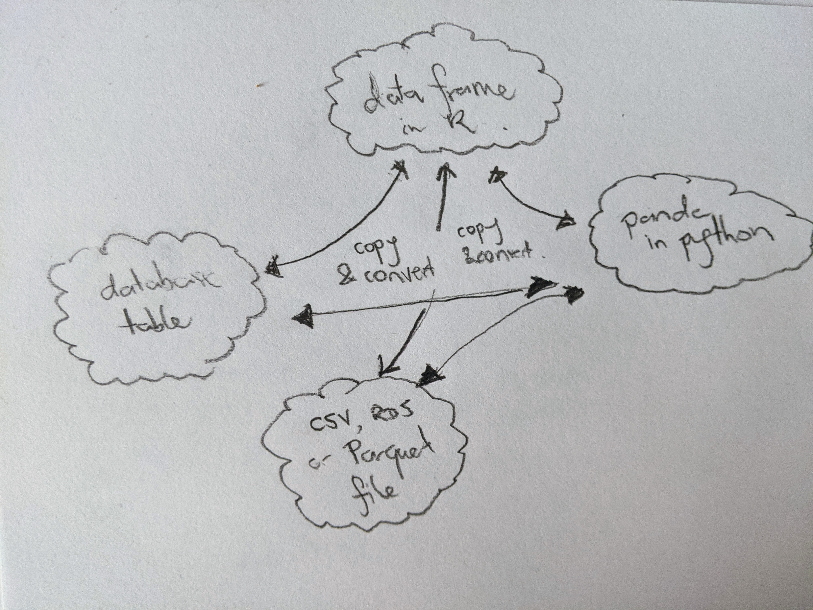
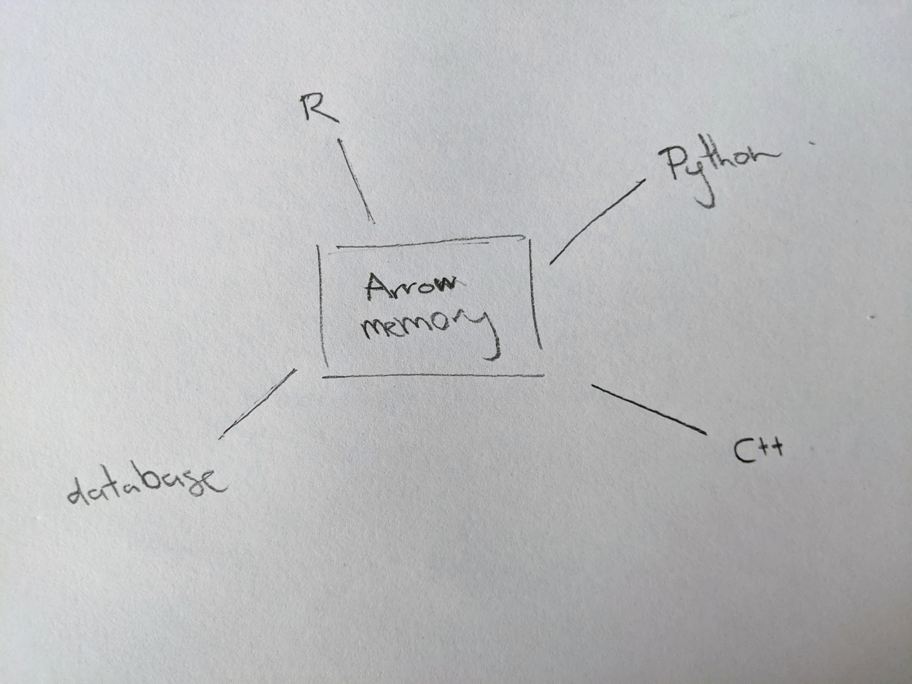

If you’re like me and spend far too much time talking about R on Twitter you may have come across people talking about how to work with large data sets in R. Perhaps you hear people talking about Parquet files, Apache Arrow, and the arrow package for R, but you’re not really sure what they’re about and are curious? If that’s you, then–
So we’re just writing obvious “I want a job in tech, please hire me!” blog posts pitched at potential employers now?
Oh shush. It’s fun and useful too, you know.
Okay fine, but could you at least be transparent about what you’re doing? Because it’s sort of obnoxious otherwise
Sheesh, what do you think this fake dialogue is for if not making the subtext blatant? Now could you please stop interrupting me and let me talk about Apache Arrow? It is in fact a more interesting subject than our pending unemployment.
Yeah, see how you feel about that in December babe…
Sigh.
.](img/tim-mossholder-ClIqpOqxZlc-unsplash.jpg)
Figure 1: Arrow image by Tim Mossholder. It has nothing whatsoever to do with the Apache Software Foundation. Available by CC0 licence on unsplash.
Introduction
Okay, where was I? Ah yes…
If you’re like me and spend far too much time talking about R on Twitter you may have come across people talking about how to work with large data sets in R. Perhaps you hear people talking about Parquet files, Apache Arrow, and the arrow package for R, but you’re not really sure what they’re about and are curious? If that’s you, then then this blog post is designed to help you get started.
Wait… do I actually care?
Let’s start at the beginning, with the most important question of all: do you actually need to care about this? This might be a long post (or possibly the first post in a long series), so let’s make sure you’re reading for the right reasons!
For a lot of people, the answer to the “do I care?” question is going to be “probably not – or at least not right now”. For example, if all your data sets are small and rectangular, then you’re probably working with CSV files and not encountering a lot of problems. Your current workflow uses read.csv() or readr::read_csv() to import data, and everything is fine. Sure, the CSV format has some problems, but it’s simple and it works. If that is you, then right now you don’t need to worry about this.
But perhaps that’s not you, or maybe that won’t be you forever. You might be working with larger data sets, either now or in the future, and when that happens you might need to care.
Okay… so what’s the problem?
Thanks for a great question! Here are a few scenarios to think about.
Scenario 1: Let’s suppose you have a big rectangular data set. An enormous table, basically, and currently it’s stored as a file on your disk. The format of that file could be a plain CSV, a compressed CSV, or it could be something fancier like a Parquet file (I’ll come back to those in a later post, I suspect). It might be a couple of billion rows or so, the kind of thing that you can store on disk but is too big to fit into memory, so it’s not going to be very easy to read this thing into R as a data frame! But your boss wants you to analyse it in R anyway. That’s awkward. R likes to store things in memory. Eek.
Scenario 2: Okay, maybe your data isn’t that big and it fits in memory, but it’s still pretty big, and you need to do something complicated with it. Maybe your analysis needs to start in R but then continue in Python. Or something like that. In your head, you’re thinking okay first I have to read the whole dataset into memory in R, and then it has to be transferred to Python which will have to read its own copy, and… gosh that sounds slow and inefficient. Ugh.
Scenario 3: Honestly, you’re just tired of having to deal with the fact that every language has its own idiosyncratic way of storing data sets in memory and it’s exhausting to have to keep learning new things and you really wish there were some standardised way that programming languages represent data in memory and you’d like a single toolkit that you can use regardless of what language you’re in. Sigh…
In any of these scenarios, Arrow might be useful to you.
Fiiiiiine, I’ll keep reading… tell me what Arrow is
Yaaaaay! Green Arrow is a superhero in the DC Comics universe, whose real name is Oliver Queen. He was the subject of an unintentionally hilarious TV show, and–
Sigh. Apache Arrow please?
Oh right. Apache Arrow is a standardised, language-independent format for storing table-like data in-memory, using a columnar format and supporting zero-copy reads without serialisation overhead.
I hate you
Sorry. Let’s unpack each of those terms:
- Arrow is a standardised and language-independent format. It’s the same thing regardless of what programming language you’re using: a data set accessed from R with Arrow has the same format as the a data set accessed in Python.
- Arrow is used to store table-like data, very similar to a data frame or tibble.
- Arrow refers to the in-memory format: it’s not talking about how the data are stored on disk, and it’s not talking about file formats. It’s all about how a loaded data set is represented in memory.1
- Arrow uses columnar format. Unlike a CSV file, which stores the data row-wise, it represents the data column-wise: this turns out to be a much more efficient way to represent data when you need to subset the data (e.g., by using
dplyr::filter()in R or theWHEREclause in SQL). - Arrow supports zero-copy reads without serialisation overhead, which… um… yeah, what the heck does that mean?
So yeah. Serialisation is one of those terms that those fancy data people know all about, but a regular R user might not be quite as familiar with. It’s worth unpacking this a bit because it’s helpful for understanding the problem that Arrow solves…
…Hey!
Wait a second, I already wrote a blog post about serialisation! I don’t need to write another one.2 The TL;DR, for folks who quite reasonably don’t want to do a deep dive into how R objects are written to RDS files, is that serialisation is the process of taking an in-memory data structure (like a data frame), and converting it into a sequence of bytes. Those bytes can either be written to disk (when you’re saving a file) or they can be transmitted over some other channel. Regardless of what you want to do with the serialised data, this conversion takes time and resources, and at some point the data will need to be unserialised later. The resources expended in doing so are referred to as the “serialisation overhead”.
For small data sets, it doesn’t take R very long to serialise or unserialise. The “serialisation overhead” isn’t a big deal. But when the data set is very large, this is not a trivial operation and you don’t want to do this very often. That’s a problem when a large data set needs to be passed around between multiple platforms. Loading the a CSV into R incurs a serialisation cost; transferring a copy of the data from R to Python incurs a serialisation cost. This happens because R and Python have different structured representations: a data frame in R is a different kind of thing to a panda in Python, so the data has to be serialised, transferred, and then unserialised at the other end in order to pass the data from one to another.
Wouldn’t it be nice if we could avoid that? What if there was just one data structure representing the table in-memory, and R and Python could both agree to use it? That would remove the need to copy and transfer the data, right? And in doing so, it would eliminate those pesky serialisation costs incurred every time. It would be a “zero-copy” mechanism.
If only there were a standardised, language-independent format for storing table-like data in-memory, using a columnar format and supporting zero-copy reads without serialisation overhead…
Figure 2: Arrow image by Possessed Photography. It also has nothing whatsoever to do with the Apache Software Foundation. Available by CC0 licence on unsplash.
Overview of Arrow
Here’s one of the two big ideas: standardisation prevents wasteful copying. The current situation that most of us are working in looks something like this. Every application and programming language defines its own format for storing data in memory (and often on disk too), and so any time multiple applications require access to the same data, there’s a serialisation cost. The bigger the data, the higher that cost will be. The more applications you connect to the same data, the more times you incur the cost:

Arrow solves this problem by allocating its own memory to store the data, and providing tools that allow you to access this from any language you like. The goal is to make those tools feel “natural” in whatever language you’re using. For example, if you’re an R user, you may already be familiar with the dplyr grammar for data manipulation and you’d like to be able to manipulate an Arrow Table using dplyr, in exactly the same way you would manipulate a data frame. The arrow R package allows you to do precisely this, and there’s a similar story that applies on the [Python side](https://arrow.apache.org/docs/python/_. This allows you to write code that feels natural for the language you’re working in.
In this approach, R and Python both have a toolkit that plays nicely with Arrow and feels native to that language. Applications written in R and applications written in Python can both work with the same underlying data (because it’s in Arrow), so you don’t have to serialise the data in order for them to talk to each other:

So that’s the first big idea.
The second big idea is that Arrow organises data column-wise in memory and as consequence it can support cool single instruction multiple data (or SIMD) operations that you can do with modern CPUs, which I totally understand 100% and am not just paraphrasing Wikipedia. Anyway, it doesn’t really matter at the user level. All we care about there is that manipulating data with Arrow can be very fast. There’s a very brief discussion of this on the Arrow overview page. (It also has prettier versions of my crappy handwritten diagrams)
.](img/denise-johnson-siRbJlln-xA-unsplash.jpg)
Figure 3: Arrow image by Denise Johnson. Yet again, it has nothing whatsoever to do with the Apache Software Foundation but it is very pretty. Available by CC0 licence on unsplash.
Installing Arrow
Installing Apache Arrow on your local machine as an R user is either extremely easy or mildly tiresome, depending almost entirely on whether you’re on Linux. If you’re using Windows or Mac OS, you shouldn’t need to do anything except install the arrow package in the usual way. It just works:
install.packages("arrow")
If you’re on Linux, there may not be any precompiled C++ binaries for your system, so you’ll have to do it yourself. On my system this was quite time consuming, and the first couple of times I tried it I was convinced that nothing was actually happening because I wasn’t seeing a progress bar or anything, and being impatient I killed the install process before it was finished. If you’re like me and need visual confirmation that something is happening, there’s an ARROW_R_DEV environment variable you can set that will make the process more verbose:
Sys.setenv(ARROW_R_DEV = TRUE)
install.packages("arrow")
This way you get to see all the C++ build information scrolling by on the screen during the installation process. It doesn’t make for very exciting viewing, but at least you have visual confirmation that everything is working!
There are quite a few ways you can customise the installation process, and they’re all documented on the installation page. One particularly useful thing to do is to set LIBARROW_MINIMAL to false, which ensures that arrow will install a bunch of optional features like compression libraries and AWS S3 support. It takes longer but you get more stuff! So the actual installation code I used was this:
Sys.setenv(
ARROW_R_DEV = TRUE,
LIBARROW_MINIMAL = FALSE
)
install.packages("arrow")
This may take quite a long time if you’re compiling from source so you may want to go make a cup of tea or something while it installs. At the end, hopefully, you’ll have a working version of the package:
You can use the arrow_info() function to obtain information about your installation:
Arrow package version: 6.0.0.2
Capabilities:
dataset TRUE
parquet TRUE
json TRUE
s3 TRUE
utf8proc TRUE
re2 TRUE
snappy TRUE
gzip TRUE
brotli TRUE
zstd TRUE
lz4 TRUE
lz4_frame TRUE
lzo FALSE
bz2 TRUE
jemalloc TRUE
mimalloc TRUE
Memory:
Allocator jemalloc
Current 0 bytes
Max 0 bytes
Runtime:
SIMD Level avx2
Detected SIMD Level avx2
Build:
C++ Library Version 6.0.0
C++ Compiler GNU
C++ Compiler Version 9.3.0Yaaas queen! We are ready to go.
Figure 4: Arrow image by Frank Busch. Now there are two! There are two arrows. Available by CC0 licence on unsplash.
Does it work?
My goal in this post is fairly modest. I wanted to understand why everyone I talk to seems so excited about Arrow, and try to get it configured to work on my machine. Assuming I can be bothered continuing this series, the next step would be to start playing with Arrow and do a proper exploration. For now though, I’ll try something simple, using the diamonds data from the ggplot2 package
# A tibble: 53,940 × 10
carat cut color clarity depth table price x y z
<dbl> <ord> <ord> <ord> <dbl> <dbl> <int> <dbl> <dbl> <dbl>
1 0.23 Ideal E SI2 61.5 55 326 3.95 3.98 2.43
2 0.21 Premium E SI1 59.8 61 326 3.89 3.84 2.31
3 0.23 Good E VS1 56.9 65 327 4.05 4.07 2.31
4 0.29 Premium I VS2 62.4 58 334 4.2 4.23 2.63
5 0.31 Good J SI2 63.3 58 335 4.34 4.35 2.75
6 0.24 Very Good J VVS2 62.8 57 336 3.94 3.96 2.48
7 0.24 Very Good I VVS1 62.3 57 336 3.95 3.98 2.47
8 0.26 Very Good H SI1 61.9 55 337 4.07 4.11 2.53
9 0.22 Fair E VS2 65.1 61 337 3.87 3.78 2.49
10 0.23 Very Good H VS1 59.4 61 338 4 4.05 2.39
# … with 53,930 more rowsExample 1: Arrow data sets aren’t stored in R memory
Okay, so the first thing I want to investigate is this idea that Arrow holds the data in its own memory, not in the memory allocated to R. As things currently stand the diamonds tibble has 53940 rows stored in R memory, and that occupies about 3.3MB of memory:
lobstr::obj_size(diamonds)
3,456,344 BWhat happens when we move the data into Arrow? To do this we would construct a “Table” object using the arrow_table() function, like this:
diamonds2 <- arrow_table(diamonds)
diamonds2
Table
53940 rows x 10 columns
$carat <double>
$cut <dictionary<values=string, indices=int8, ordered>>
$color <dictionary<values=string, indices=int8, ordered>>
$clarity <dictionary<values=string, indices=int8, ordered>>
$depth <double>
$table <double>
$price <int32>
$x <double>
$y <double>
$z <double>It’s printed a little differently, but it’s the same tabular data structure consisting of 53940 rows and 10 columns. So how much R memory does diamonds2 occupy?
lobstr::obj_size(diamonds2)
285,696 BOnly 279KB. The reason why it occupies so little memory is that diamonds2 doesn’t contain all the data. The data are stored elsewhere, using memory allocated to Arrow. If a Python program wanted to access the diamonds2 data, it could do so without having to serialise the data again. It can link to the same data structure in Arrow memory that I just created. Neat!
Example 2: Arrow plays nicely with dplyr
One neat thing about dplyr is that it cleanly separates the API from the backend. So you can use the dbplyr package to work with databases using dplyr code, or the dtplyr package to use a data.table backend, and so on. The arrow package does the same thing for Apache Arrow.
Here’s an example. If I were working with the original diamonds tibble, I might write a simple dplyr pipe to tabulate the clarity of premium-cut diamonds:
# A tibble: 8 × 2
clarity n
<ord> <int>
1 I1 205
2 SI2 2949
3 SI1 3575
4 VS2 3357
5 VS1 1989
6 VVS2 870
7 VVS1 616
8 IF 230Can I do the same thing using the diamonds2 Table? Let’s try:
InMemoryDataset (query)
clarity: dictionary<values=string, indices=int8, ordered>
n: int32
See $.data for the source Arrow objectOkay, perhaps not what we were expecting. In order to optimise performance, the query doesn’t get evaluated immediately (more on this in a later post perhaps) You have to tell it either to compute() the result, which will return another Table, or to collect() the result into a data frame
# A tibble: 8 × 2
clarity n
<ord> <int>
1 SI1 3575
2 VS2 3357
3 SI2 2949
4 I1 205
5 VS1 1989
6 VVS1 616
7 VVS2 870
8 IF 230At no point has the full data set been loaded into R memory. The diamonds2 object doesn’t contain any new information. It’s still the same size:
lobstr::obj_size(diamonds2)
285,696 BMy example is trivial, of course, because the diamonds data set isn’t very big. But if you start reading the Arrow documentation, they give an example using the NYC taxi data which is about 37GB in size. That’s… a teeensy bit bigger than I’d want to try loading into memory on my laptop, so I wouldn’t be able to load it into R at all much less use dplyr. However, because Arrow supplies a dplyr back end, it is possible to write dplyr code for the NYC taxi data.
Old and jaded though I may be, I have to admit that’s pretty cool.
Figure 5: Okay yeah, this one actually does have something to do with the Apache Software Foundation. It’s, like, a registered trademark or something. I’m guessing this counts as fair use though.
Technically speaking, there’s a little ambiguity here. Usually when we’re talking about Arrow we’re talking about the in memory specification, but the term is also used to refer to the software implementing it, which includes a lot of compute functionality that goes beyond what the specification states. Similarly, the Arrow in-memory format doesn’t have to imply any particular serialisation format, but in practice it’s tightly connected to the IPC (“interprocess communication”) streaming and file format, and to the parquet file format. As a consequence, the term “Arrow” is sometimes used to refer to that broader suite of tools.↩︎
Okay, I’ll be honest, the RDS serialisation post came about because I was thinking about Arrow and serialisation costs, and got slightly distracted!↩︎